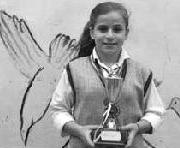

İzgören&Akın'a bir toplantıya gideceğim. Baktım geç kalma ihtimali var, bindim bir taksiye, muhabbetçi bir arkadaş. O anlatıyor, ben dinliyorum. Tam iş yerinin önüne geldik, Ankara'da Bakanlıklar. Diyelim ki 9.75 tuttu, ben 10 lira uzattım. Hani hepimizin yaşadığı sahne vardır ya, taksici üstünü arıyormuş gibi yapar, siz de para üstünü alabilmek için bir ayak dışarıda, inmemek için debelenirsiniz. Tam o sahne olacak. Bu, para üstü var mı diye aranmaya başladı.
"Üstü kalsın kardeşim" dedim.
Döndü bana doğru:
"Vaktin var mı ağabey?" dedi.
"Evet" dedim (benim tek ayak dışarıda).
Dörtlülere bastı, trafik dört şerit akıyor, indi araçtan. Önde bir büfe var. Gitti oraya, bir şeyler konuşup geldi. Bana yirmi beş kuruş uzattı, belli ki para bozdurmuş.
"Birader" dedim, 9.75 değil, 10.50 yazsa ister miydin elli kuruşu benden?
– Ne alacağım ağabey elli kuruşu.
– Peki, niye gittin yirmi beş kuruş için o kadar uğraştın, "Üstü kalsın" demiştim.
Döndü bana, attı kolunu arkaya:
– Vaktin var mı ağabey?
– Var.
– Çek kapıyı o zaman.
Muhabbetçi bir taksiciyle karşı karşıyayız.
Beş dakika konuştuk. İngiltere'de profesöründen, bilmem kiminden eğitimler aldım. O taksicinin beş dakikada öğrettiklerini, İngiliz hocalar haftalarca verdikleri derslerde öğretemediler.
– Ağabey, biz Keçiören'de beş kardeşiz. Babam ameleydi benim, günlük yevmiyeye giderdi; artık inşaat falan bulursa çalışır gelir, o gün iş bulamamışsa, biz eve gelişinden, yüzünden anlardık. Durumumuz hiç iyi olmadı. Akşam yer sofrasında yemek yerdik. Yemek bitince babam bize "Durun kalkmayın" derdi. Önce dua ederdik sonra babam bize sofrada konuşma yapardı.
"Aha" dedim, "Bizim meslekten, seminerci."
– Ne anlatırdı baban?
– Hayatta nasıl başarılı olunacağını.
Hakiki, dövme Keçiören Anthony Robbins Sharma'sı bir nevi.
Şoför de ben de gülümsedik.
O gün inşaat için çağırmazlarsa eve para getiremiyor, sonra çocuklara hayatta başarı teknikleri anlatıyor.
– Babam sabah işe gidince büyük ağabeyimiz onu taklit ederdi, delik bir çorapla pantolonun ceplerini çıkarır, dört kardeşi karşısına alıp "Dürüst olun, evinize haram lokma sokmayın" diye anlatırken, biz de gülerdik. Annem kızardı, "Babanızla alay etmeyin. O, hem dürüst hem de çalışkandır" derdi. Yan evde iki kardeş vardı, onların babası zengindi. Babaları birahane işletiyordu, ama adamda her numara vardı, kumar falan oynatırdı. Bizim yeni hiçbir şeyimiz olmadı, hep o ikisinin eskilerini kullandık. O amca mahalleden geçerken biz beş kardeş ayağa kalkardık, çünkü bize bahşiş verirdi. Babam eve girince ayağa kalkmazdık, çünkü hediye, para falan hak getire. Ağabey, biz babayı kaybettik. Altı ay içinde yandaki baba da öldü. Yandaki baba iki çocuğa beş katlı bir apartman, işleyen birahane, dövizler ve araziler bıraktı. Bizim baba ne bıraktı biliyor musun?
– Ne bıraktı?
– Bakkal veresiyesi ve konuşmalarını bıraktı: "Evladım işinizi dürüst yapın, hakkınız olmayan parayı almayın..." falan filan. Ağabey, aradan on beş yıl geçti, diğer iki kardeş cezaevindeler, ne ev kaldı, ne birahane. Ailesi dağıldı.
Biz beş kardeş, beşimizin Keçiören'de taksi durağında birer taksisi var. Hepimizin birer ailesi, çoluk çocuğu, hepimizin birer dairesi var. Geçenlerde büyük ağabeyimiz bizi topladı ve dedi ki:
"Asıl mirası bizim baba bırakmış."
O gün hepimiz ağladık. Beş kardeş de taksiciliğe başladığımızdan beri, taksimetrenin yazmadığı 10 kuruşu evimize sokmadık. Her şeyimiz var Allah'a şükür.
Çok duygulandım, veda ettim, tam ineceğim:
– Dur ağabey, asıl bomba şimdi.
– Nedir bomba?
– Nerede oturuyoruz biliyor musun? O iki kardeşin oturduğu beş katlı apartmanı biz aldık. Beş kardeş orada oturuyoruz.
Evladınıza ne araba bırakırsınız, ne ev, ne de başka bir miras. Evlada sadece değer kavramları bırakırsınız. Bakın iki baba da evlatlarına değer kavramları bırakmışlar.
Aslında işçi babanın seminerlerini beş çocuk da dinlemedi.
İskoçlar der ki: "Çocuklar dudaklarınızı değil, ayaklarınızı izlerler."
Yaptığınız her şeyle, attığınız her adımda aslında evladınıza eğitim verirsiniz. O çocuklar konferansları dinlemedi, babalarının otuz lira yevmiye için nasıl çalıştığını, çaba gösterdiğini gördüler.
Şimdi burada anlatmaya çalıştığım şeyin, bize anlatılanlarla ne kadar ters olduğunun farkındayım, özellikle bu ABD kökenli kişisel gelişim faaliyetleri, sırf nasıl daha fazla kazanırsınız üzerine kuruluyken.
İstanbul'dan bir öğrencim var, Nur, pırıl pırıl bir kız, dershanede müdür. Diksiyon, NLP, beden dili gibi kurslar başlatıyorlar. Ünlü bir NLP'ciyle anlaşıp açıyorlar kursları; reklam, yatırım... Öğrencileri topluyorlar. Öğrenciler bir dönem geliyor, ikinci ay hiçbiri yok. Sonra on beş öğrenci daha bulup yeniden başlıyorlar, ikinci ay hiçbiri yok. Hoca da iyi, öğrenciler, sınıf, kahkahadan yıkılıyor. Sonra öğreniyorlar ki NLP'cinin karşı tarafta kendi dershanesi var, ilk ayın sonunda bunların bulduğu tüm öğrencileri oraya götürüyor. Yüz yüze konuşup yolları ayırıyorlar, adam "Bunda etik bir problem görmüyorum" demiş. Bu sefer daha ünlü bir NLP'ci bulmuşlar, baştan sormuşlar:
– Dershaneniz var mı?
– Yok.
– Biz böyle böyle bir olay yaşadık da.
–Vay karaktersiz vay, zaten piyasada öyle tanınır, paracı, ...
Bu yeni NLP'ciyle şirket ziyaretlerine gidiyorlar. "Firma çalışanlarınıza NLP eğitimi verelim, motivasyonları artar, para kazanırsınız" falan. Sürüyle şirket ziyaret ediyorlar. Dört beş ay, tık yok. Sonra bir gün şans eseri öğreniyorlar ki bu NLP'ci gidilen şirketi ziyaret sonrası arıyor, "Size o fiyatı verdik ama çok pahalı. Boşuna komisyon vermeyin, direkt benden şu fiyata alın" diye. Şirketler de adamdan doğrudan eğitim alıyorlar.
Bununla da konuşuyorlar.
"Ben bunda etik bir problem görmüyorum" diyor.
"Ben bunda etik bir problem görmüyorum" cümlesini ezberleyin. Evde bir halt mı yediniz, dayayın cümleyi. Bakın polis yakaladı kapkaççıyı, kapkaççı normalde yalvarır ya "Vurma ağabey" falan diye, çevre esnaf da verir odunu. Eğitim almış olsa ve yakalandığında (yalnız üzerinde lacivert takım, kravat, saç dökükse keçi sakal falan da olacak) gür bir sesle "Ben bunda etik bir problem görmüyorum" dese, esnaf, polis ayılana kadar kapkaççı ortadan kaybolur.
Bakın bir tarafta beş kardeşin ilkokul mezunu işçi babası, o da konferansçı, yer sofrasında beş evlada konuşuyor, diğer tarafta Amerikalı uzmanlardan feyz almış, tıklım tıklım salonlara konuşan onları güldürüp, bağırtıp, zıplatıp, paraya para demeyen kişisel gelişim uzmanları.
"Hadi leeyn" değil mi? Hep beraber bir "Hadi leeyn" daha.
Bizim Elifçik, kızı Zeynep'i Korukent'teki bir devlet ilköğretim okuluna kaydettirmeye gittiğinde "Müdür Bey görüşecek" demişler. Gitmişler Müdür Bey'e. Müdür Bey eğitimden değil, hep paradan konuşuyormuş. Elif de saf saf okula bağış yapacağını zannediyor, sonra konuşma ilerlerken Müdür Bey anlatıyor: "Ben oğlumu liseye kaydettirmeye götürdüm. Müdürü de benim arkadaşım. Kayıt parası dışında çıkardım iki milyar da ona verdim. ‘Arkadaşım bu senin hakkın' dedim. Hakkı ama değil mi?" Elif o zaman fark ediyor adamın kendisinden para istediğini. Çok morali bozuluyor Elif'in, çıkışta bir veliyle konuşuyor, "Yapılacak bir şey yok, okul çok iyi. Mecburen hepimiz veriyoruz" diyor veli. Kızları o okulda okuyan bir tanıdıklarına söylemişler. Kadın, "Adamı rüşvet alırken videoya kaydettiler, bir sürü şikâyet oldu, yine de on yıldır kimse bir şey yapamadı. Çatır çatır rüşvet yiyorlar. Derslerden sonra etüt çalışması yapılıyor, sınavda soracaklarını özellikle derste değil de, o etütlerde öğretiyorlar. Mecburen bütün veliler çocuklarını fahiş rakamlarla o etütlere gönderiyor, o parayı da aralarında paylaşıyorlar." Bunun gibi anlatılanların haddi hesabı yok. Tezgâha bakar mısınız? Milli Eğitim'de yöneticilik yapmış bir arkadaşıma sordum. Bir şehrin adını verdi, "1250 okul müdürü var, 1000 tanesinin kemeri göbeğinin üzerinde zor bağlanır, her birinin servis şirketleri, yemek şirketleri, temizlik şirketleri, öğrenci kaydı adı altında neler çevirdiğine inanamazsın" dedi. (Allah aşkına bana e-mektup atmayın, "Ben de müdürüm, yemiyorum" diye, eğer öyleyseniz bütün okul öğretmenleri, velileri farkındadır zaten.)

2007 yılı, Trabzon bölgesi okullar arası kros yarışması, en önde koşan kızımızın adı Hilal Coşkuner. Hilal bir anda arkasında koşan rakibinin arazide çok kötü düştüğünü görüyor. Koşmaya devam etse birinci olacak. Duruyor, rakibini yerden kaldırıyor ve ambulansa kadar taşıyor. Koşmaya devam etse birinci olacak, dereceye giremiyor.
Hilal, 2007'de, Dünya Olimpiyat Komitesi Baron De Coubertin Fair Play büyük ödülünü Türkiye'ye kazandırdı.
Bakın ne diyeceğim, 15 yaşındaki Hilalimi alın; o, sigara, rüşvet, siyaset kokan adamlardan birinin yerine bir okula müdür olarak koyun. Okulu daha iyi yönetmezse neyim. Matematik, fizik bilmesine gerek yok, en azından çocuklara ülkeyi, bayrağı, Atatürk'ü sevdirir.